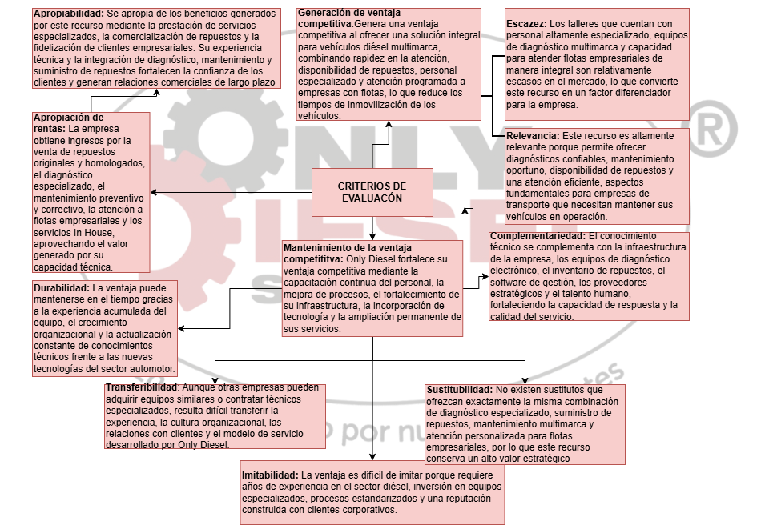

Aplicación de las herramientas de análisis estratégico a Only Diesel S.A.S.
Aplicación de la herramienta Evaluación Estratégica de Recursos y Capacidades y análisis de los resultados.

Figura 3. Elaboración propia con base en la información institucional de Only Diesel S.A.S y el análisis estratégico realizado por el equipo de trabajo (2026)
Documentos de trabajo aplicados por el equipo consultor. Cada archivo incluye la herramienta diligenciada y el análisis de sus resultados.
Perfil Estratégico Only Diesel
Herramienta de perfil estratégico del entorno y análisis de resultados aplicada a Only Diesel S.A.S.
Diamante de Porter
Herramienta Diamante de Porter y análisis de resultados aplicada al sector y a la organización.
Perfil Estratégico de la Empresa
Herramienta Perfil Estratégico de la Empresa y análisis de resultados aplicada a Only Diesel S.A.S.